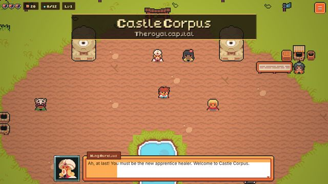

15 lands900 questions
Kingdom of Corpus
A pixel adventure across fifteen lands of the body. Calm each guardian with what you know.
- About 150 teaching diagrams and printable study notes
- Study Hall with spaced Daily Review and skill drills
- "Why that answer is tempting" feedback on every wrong choice